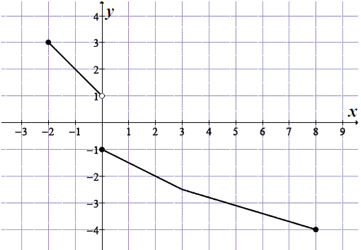
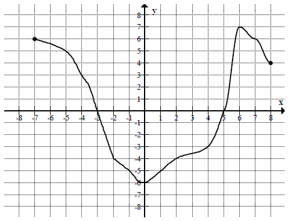

Jesteś tutaj: Matura
podstawowa - kurs - część 21 - zadania
Matura podstawowa - kurs - część 21 - zadania
Cały kurs na: ./matematyka-matura-podstawowa-kurs.html.
Zbiorem wartości funkcji przedstawionej na rysunku jest przedział 
A.\(\langle -3,6 \rangle\)
B.\(\langle -1,4 \rangle\)
C.\((1,3)\)
D.\((-2,2)\)
B
Zbiorem wartości funkcji, której wykres przedstawiono na rysunku jest
przedział:

A.\( \langle -4,5 \rangle \)
B.\( \langle -3,4 \rangle \)
C.\( \langle -2,4 \rangle \)
D.\( \langle -3,2 \rangle \)
B
Na rysunku przedstawiony jest wykres funkcji \(y = f(x)\).  Zbiorem wartości tej funkcji jest
A.\( \langle -4,3 \rangle \)
B.\( \langle -4,-1 \rangle \cup \langle 1,3 \rangle\)
C.\( \langle -4,-1 \rangle \cup ( 1,3 \rangle \)
D.\( \langle -5,6 \rangle \)
C
Na rysunku przedstawiony jest wykres funkcji \(y=f(x)\).  Które równanie ma dokładnie trzy
rozwiązania?
Które równanie ma dokładnie trzy
rozwiązania?
Które równanie ma dokładnie trzy
rozwiązania? A.\( f(x)=0 \)
B.\( f(x)=1 \)
C.\( f(x)=2 \)
D.\( f(x)=3 \)
C
Na rysunku przedstawiono wykres funkcji \(f\).  Odczytaj z wykresu i zapisz:
Odczytaj z wykresu i zapisz:
Odczytaj z wykresu i zapisz: - zbiór wartości funkcji \(f\),
- przedział maksymalnej długości, w którym \(f\) jest malejąca.
a) \(\langle -2;3 \rangle \)
b) \(\langle -2;2 \rangle \)
Na rysunku przedstawiony jest wykres funkcji \(f(x)\) określonej dla \(x\in [-7,
8]\).  Odczytaj z wykresu i
zapisz:
a) największą wartość funkcji \(f\),
b) zbiór rozwiązań nierówności \(f(x)\lt 0\).
a) największą wartość funkcji \(f\),
b) zbiór rozwiązań nierówności \(f(x)\lt 0\).
a) \(7\); b) \(x\in (-3;5)\)
Na rysunku przedstawiono wykres funkcji \(y=f(x)\).  Największa wartość funkcji \(f\) w
przedziale \([-1,1]\) jest równa
Największa wartość funkcji \(f\) w
przedziale \([-1,1]\) jest równa
Największa wartość funkcji \(f\) w
przedziale \([-1,1]\) jest równa A.\( 4 \)
B.\( 3 \)
C.\( 2 \)
D.\( 1 \)
B
Zbiorem wartości funkcji \(f\) jest przedział 
A.\( \langle -3,5 \rangle \)
B.\( \langle -6,7 \rangle \)
C.\( \langle 0,6 \rangle \)
D.\( \langle -5,8 \rangle \)
A
Przedziałem, w którym funkcja \(f\) przyjmuje tylko wartości ujemne, jest
A.\( \langle 5,0 \rangle \)
B.\( ( 5,7 \rangle \)
C.\( \langle 0,7 \rangle \)
D.\( \langle -6,5 \rangle \)
B
Rysunek przedstawia wykres pewnej funkcji \( y=f(x) \), określonej dla \( x \in
\langle -4,4 \rangle \).  Zbiór
wszystkich argumentów, dla których funkcja \( f \) przyjmuje wartości niedodatnie, to zbiór
Zbiór
wszystkich argumentów, dla których funkcja \( f \) przyjmuje wartości niedodatnie, to zbiór
Zbiór
wszystkich argumentów, dla których funkcja \( f \) przyjmuje wartości niedodatnie, to zbiór A.\(\langle 0,3 )\cup ( 3,4 \rangle \)
B.\(\langle -4,-3 \rangle\cup \langle 0,4 \rangle \)
C.\((-4,-3)\cup (0,3)\cup (3,4) \)
D.\((-2,1)\cup (3,4) \)
B
Największą wartością funkcji \( f \) jest 
A.\(3 \)
B.\(0 \)
C.\(-3 \)
D.\(8 \)
A
Na rysunku przedstawiono wykres funkcji \(f\).  Zbiorem wartości funkcji \(f\) jest
Zbiorem wartości funkcji \(f\) jest
Zbiorem wartości funkcji \(f\) jest A.\( (-2,2\rangle \)
B.\( \langle -2,2\rangle \)
C.\( \langle -2,2) \)
D.\( (-2,2) \)
A